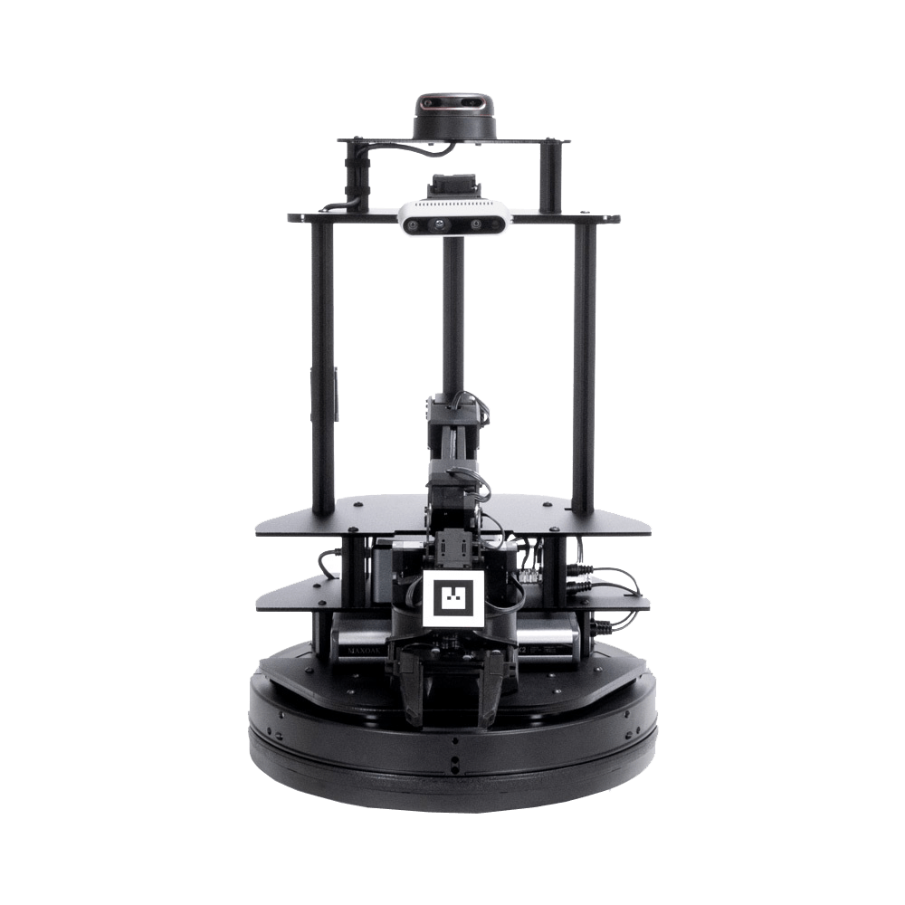
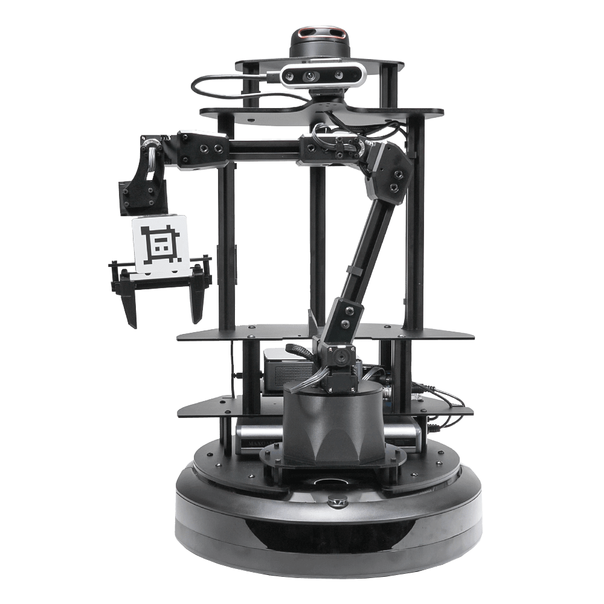

LoCoBot WidowX-200
| LoCoBot WidowX-200 (Kobuki) | LoCoBot WidowX-200 (Create® 3) |
|---|---|
|  |  |
Default Servo Configurations
| ID | Joint Name | Servo | Baudrate |
|---|---|---|---|
| 1 | waist | XM430-W350 | 1Mbps |
| 2 | shoulder | XM430-W350 | 1Mbps |
| 3 | shoulder_shadow | XM430-W350 | 1Mbps |
| 4 | elbow | XM430-W350 | 1Mbps |
| 5 | wrist_angle | XM430-W350 | 1Mbps |
| 6 | wrist_rotate | XL430-W250 | 1Mbps |
| 7 | gripper | XL430-W250 | 1Mbps |
| 10 | pan | 2XL430-W250 | 1Mbps |
| 11 | tilt | 2XL430-W250 | 1Mbps |
Drawings
Manipulator
For more detailed information about the WidowX-200, see its documentation.